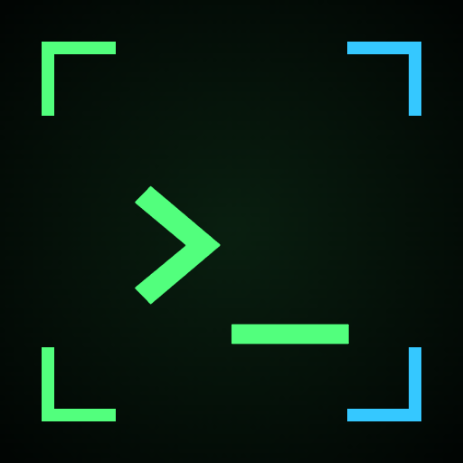
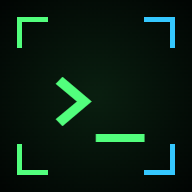
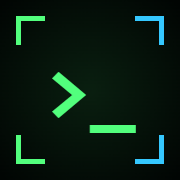
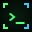
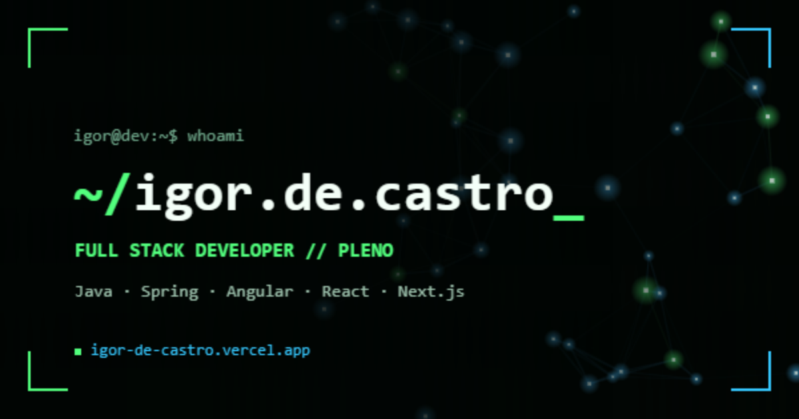

// DESIGN SYSTEM — PORTFÓLIO IGOR DE CASTRO
Arquivos prontos em assets/brand/ — copie para a pasta public/ do seu projeto Next.js.

App / PWA — 512px icon-512.png
App / PWA — 192px icon-192.png
iOS — 180px apple-touch-icon.png
Favicon — 32px favicon-32.png
Cole no <head> (ou no metadata do Next.js) com os arquivos em public/:
{{ metaSnippet }}
⚠ O WhatsApp guarda cache do preview — depois do deploy, teste com o link + "?v=2" ou valide em opengraph.xyz.
Uso: 24×24, stroke-width 2, stroke = currentColor — herdam a cor do texto (verde #52ff7d ou ciano #35c8ff).
Cursor padrão — mira
passe o mouse aqui: crosshair verde com ponto central
Cursor de link/botão — alvo HUD
colchetes ciano + ponto verde (este card é um link)
CSS pronto (já aplicado nesta página e no protótipo desktop):
{{ cursorSnippet }}
Títulos: Space Grotesk 700 · Corpo/código: JetBrains Mono 400–700